DIY Alerts & YCU Task Management: Complete Operational Guide
1. Executive Overview & Purpose
The DIY Alerts & Task Management Module in the Yuma Android App enables field technicians to rapidly identify, diagnose, and resolve issues across distributed Yuma Charging Units (YCU). When an IoT charging station reports abnormal states (power loss, faulty charging pods, battery bin failures, temperature spikes, or BLE disconnects), a DIY task is dispatched to the nearest on-ground technician.
This document details every screen, edge-case warning, telemetry metric, pod state color mapping, diagnostics bottom-sheet, and resolution/deflection workflow implemented in the production application.
- Enforce Physical Presence: Technicians must be physically within the GPS geo-fenced radius (typically 100 meters) to interact with station hardware.
- Real-time Telemetry Verification: Live 3-phase AC voltage, current, and pod statuses to prevent electrical safety hazards.
- Audit Trail & Deflection: Mandatory comments and resolution tracking, with the ability to escalate (deflect) unresolvable hardware faults to central maintenance.
2. Complete Geofence Lifecycle (4 Sequential States)
The location engine enforces physical safety by calculating Haversine distance from the station. Below is the complete 4-stage lifecycle showing how the UI transforms as the technician travels to the station, checks in, and encounters boundary breaches:
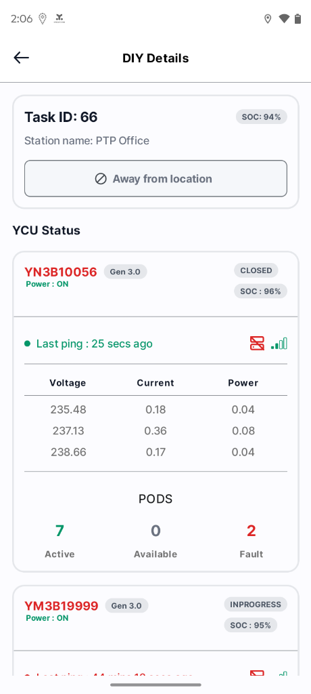
Disabled outline button
⊘ prevents ghost tasks.
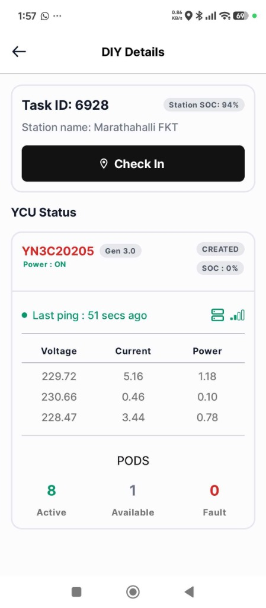
Solid black button enables upon GPS validation.
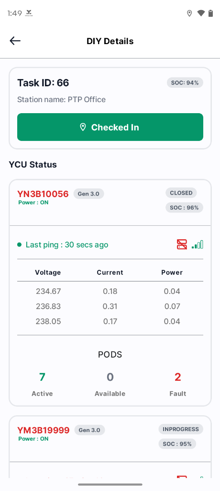
Solid green button
#059669. Diagnostics unlocked!
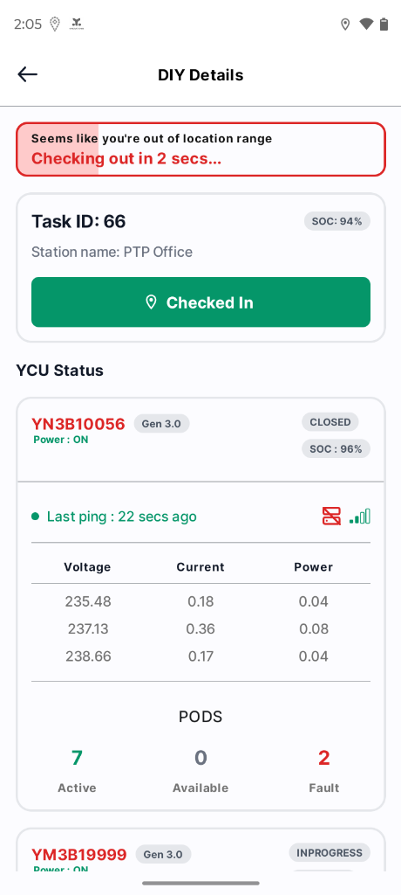
Pink animated fill banner: Checking out in X secs...
| State | UI Behavior | Allowed Actions | Technical Trigger |
|---|---|---|---|
| 1. Away from Location | Outlined button with prohibition icon ⊘, grey border, unclickable. | View-only task metadata. Cannot check in or resolve issues. | distanceInMeters > radius |
| 2. Within Range (Ready) | Solid black primary "Check In" button enabled with location pin icon. | Tap "Check In" to send GPS coordinates to backend. | distanceInMeters ≤ radius && !isCheckedIn |
| 3. Checked In | Solid green container #059669 with location pin icon and "Checked In" label. |
Full access to pod details, battery diagnostics, issue resolution. | isCheckedIn == true |
| 4. Out of Range Breach | Sticky top red border card with animated pink background fill: "Seems like you're out of location range. Checking out in X secs..." | Move back within 100m to cancel timer, or session auto terminates. | isLocationCheckoutRunning == true |
3. YCU Status & 3-Phase Electrical Telemetry
Each station card provides high-density telemetry polled continuously from the station IoT controller via MQTT/HTTP:
Key Telemetry Breakdown:
- YCU Serial & Generation:
YN3B10056/YN3C20205(Gen 3.0), red serial indicates active alert. - Power State: Power: ON or Power: OFF.
- Issue Lifecycle: Badges show
CLOSED,INPROGRESS,CREATED, orRESOLVED. - Heartbeat:
Last ping: 30 secs ago/51 secs agowith signal bar meter and connection state. - 3-Phase Electrical Meter:
Phase Voltage (V) Current (A) Power (kW) Phase 1 (R) 229.72 V 5.16 A 1.18 kW Phase 2 (Y) 230.66 V 0.46 A 0.10 kW Phase 3 (B) 228.47 V 3.44 A 0.78 kW - Pod Health Summary: 8 Active | 1 Available | 0 Fault
4. Station-Level "Other Issues" Resolution
Outside of pod-specific faults, technicians encounter general station issues (e.g., physical damage, testing overrides, HVAC failures, enclosure vandalism). These appear in the Other Issues list below the telemetry cards.
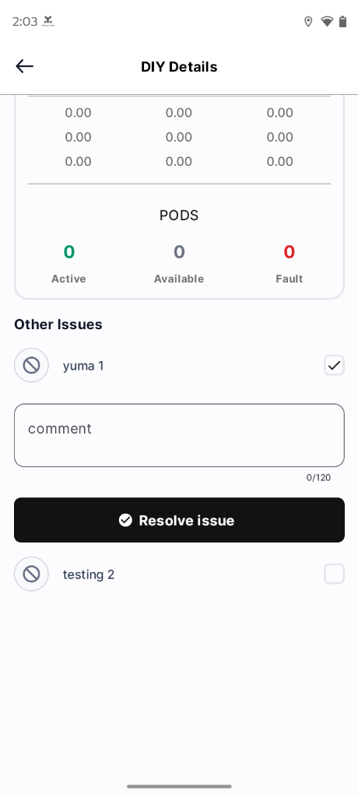
Tap the checkbox next to the reported issue (e.g., yuma 1). Only one issue can be actively expanded at a time.
The inline text box opens with a max limit of 120 characters. If submitted blank, an error warning appears: "please tell us how you resolved this."
Tap the black "Resolve issue" button. Note: Button is disabled if the technician has not Checked In!
5. Pod Matrix, Color Codes & Iconography
Tapping any YCU card opens the Pod Details Screen. Station models support either 9 Pods (3x3 grid) or 12 Pods (4x3 grid) configurations. Each slot gives instant visual feedback through distinct color palettes and icons defined in PodStatus:
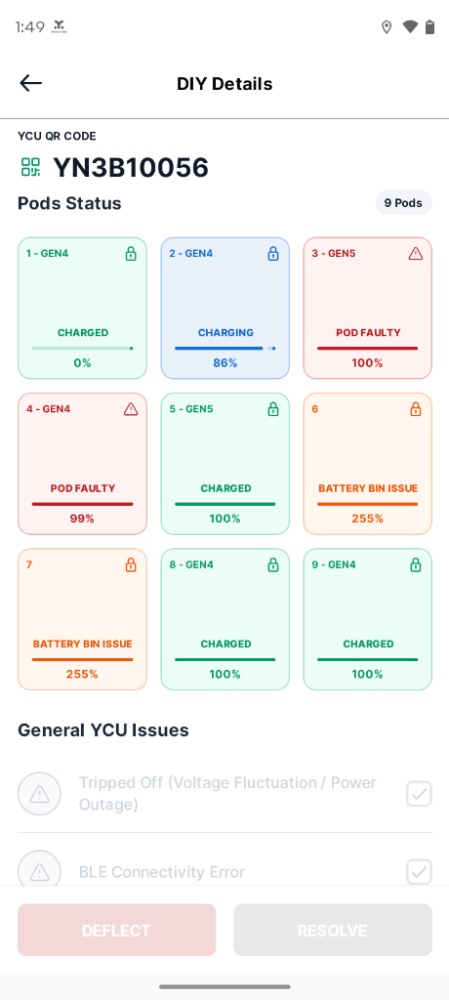
Faulty & Bin Issue Grid
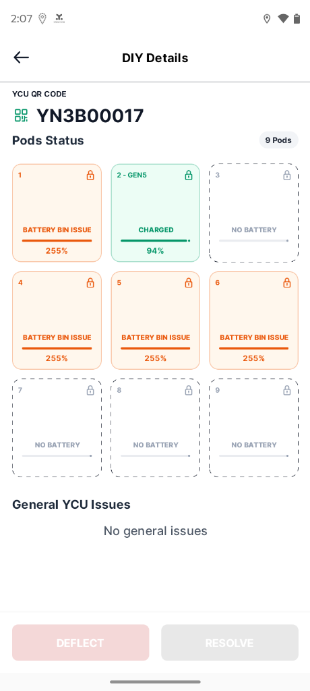
Empty Slots (NO BATTERY)
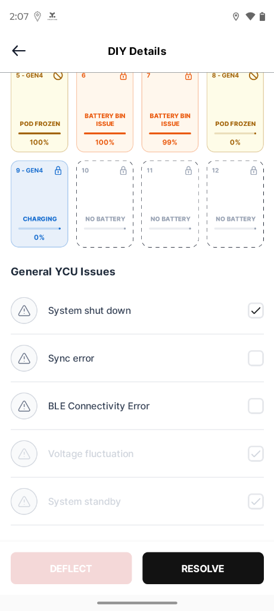
POD FROZEN & 12-Pod Station
| Pod State | Visual Styling | Icon | Indicator & Metrics | Technical Condition |
|---|---|---|---|---|
| CHARGED | BG: #ECFDF5 | Text: #059669 | 🔒 Lock / ⚠️ Alert | Green progress bar + SOC % (e.g. 100%) | bmsPcbId != "" && chargeState == "Charged" |
| CHARGING | BG: #E8F0FA | Text: #156CCF | 🔒 Lock | Blue progress bar + SOC % (e.g. 86%) | bmsPcbId != "" && chargeState == "Charging" |
| POD FAULTY | BG: #FEF2F2 | Text: #B91C1C | ⚠️ Warning Triangle | Dark red progress bar + SOC % (e.g. 99%, 100%) | isPodFaulty == true |
| POD FROZEN | BG: #FEFCE8 | Text: #A16207 | ⊘ Blocked / 🔒 Lock | Olive-yellow bar + SOC % (e.g. 0%, 100%) | isPodFrozen == true |
| BATTERY BIN ISSUE | BG: #FFF7ED | Text: #EA580C | 🔒 Lock / ⊘ Blocked | Orange bar + 255% (BMS communication loss code) |
bmsPcbId != "" && socPercent != "" |
| NO BATTERY | Dashed Border: #111827 | Text: #98A2B3 | 🔒 Lock | Grey placeholder track, no percentage text | bmsPcbId == "" (Empty Pod slot) |
6. Pod & Battery Diagnostics Deep-Dive
Tapping on any individual Pod card triggers a modal bottom-sheet with two dedicated analytical tabs: Pod issues and Battery diagnostics.
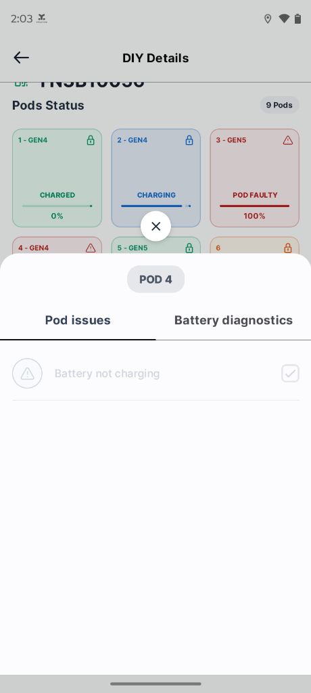
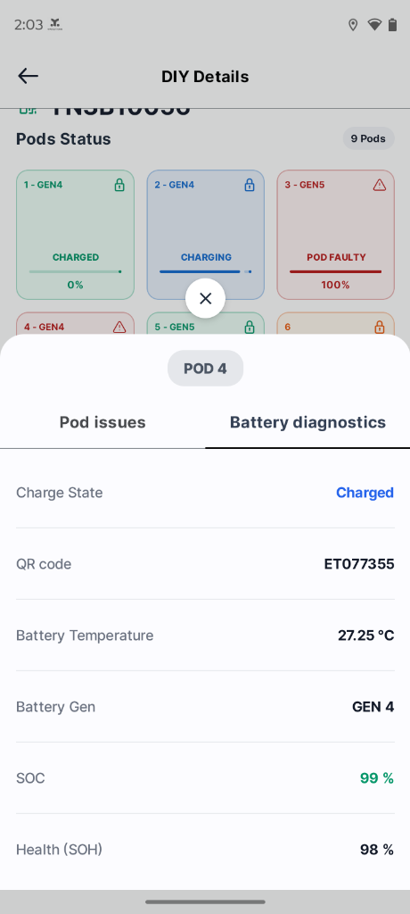
Telemetry Parameters Explained:
| Parameter | Observed Value | Significance for Technicians |
|---|---|---|
| Charge State | Charged / Charging | Current charging cycle status controlled by internal charger. |
| QR Code / Serial | ET077355 |
Physical battery barcode. Match with battery label before swapping. |
| Battery Temperature | 27.25 °C |
Thermal safety check. > 55°C indicates overheating/thermal runaway danger. |
| Battery Generation | GEN 4 / GEN 5 |
Identifies battery chemistry and pin compatibility. |
| SOC (State of Charge) | 99 % | Usable stored electrical charge in percentage. |
| Health (SOH) | 98 % |
State of Health. Batteries < 70% SOH must be flagged for retirement. |
7. Resolution & Deflection Standard Operating Procedure (SOP)
At the bottom of the Pod Details Screen, technicians have two primary call-to-actions: DEFLECT and RESOLVE.
Resolve Active (Black), Deflect Disabled (Pink)
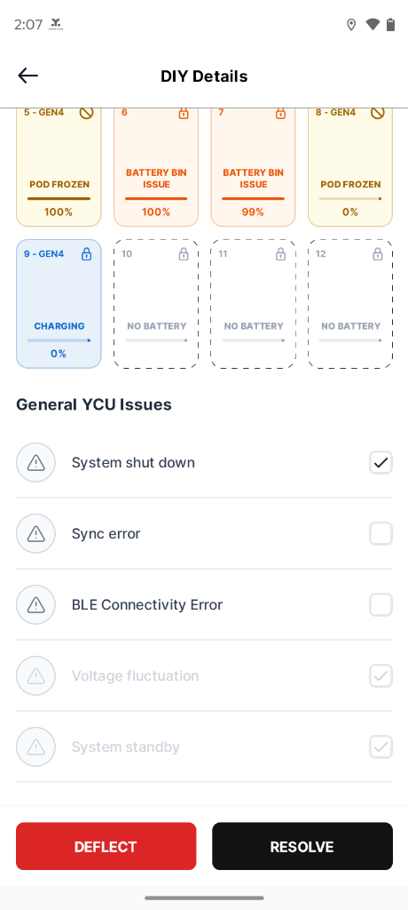
DEFLECT (Active Red) + RESOLVE (Active Black)
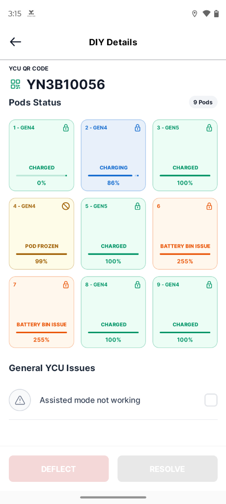
"Assisted mode not working"
- DEFLECT Button (Red): Enabled ONLY if
isAnyIssueSelected && toDeflect. If the backend task allows deflection (e.g. requires L2 engineer, mechanical replacement, PCB burn), the button turns bright red (#DC2626). Otherwise, it remains muted pink (#E9B2B2). - RESOLVE Button (Black): Enabled as long as any issue (general issue or pod issue) is checked. Turns solid black (
#000000). During submission, it shows a smooth wavy linear loading animation.
8. Technical Architecture & API Contracts
The module follows Google Clean Architecture with Jetpack Compose Material3, Kotlin Coroutines, and Hilt dependency injection.
| Endpoint | Method | Payload / Query | Description |
|---|---|---|---|
charging-unit/cu-alerts/tasks-details |
GET | task_id: Int |
Fetches station geofence radius, issues list, and station metadata. |
charging-unit/cu-alerts/ycu-details |
GET | task_id: Int |
Fetches 3-phase electrical readings and YCU controller state. |
charging-unit/cu-alerts/tasks-checkin |
POST |
{ "currentLatitude": Double, "currentLongitude": Double, "taskId": Int }
|
Verifies GPS coordinates and registers on-site technician check-in. |
charging-unit/cu-alerts/tasks-resolve |
POST |
{ "resolveIds": [Int], "resolveType": Int, "taskId": Int, "description": String }
|
Resolves either Other Issues (type=1) or Pod/General Issues (type=2). |
charging-unit/cu-alerts/tasks-deflect |
POST |
{ "deflectedIds": [Int], "taskId": Int }
|
Escalates issues to higher maintenance tier. |